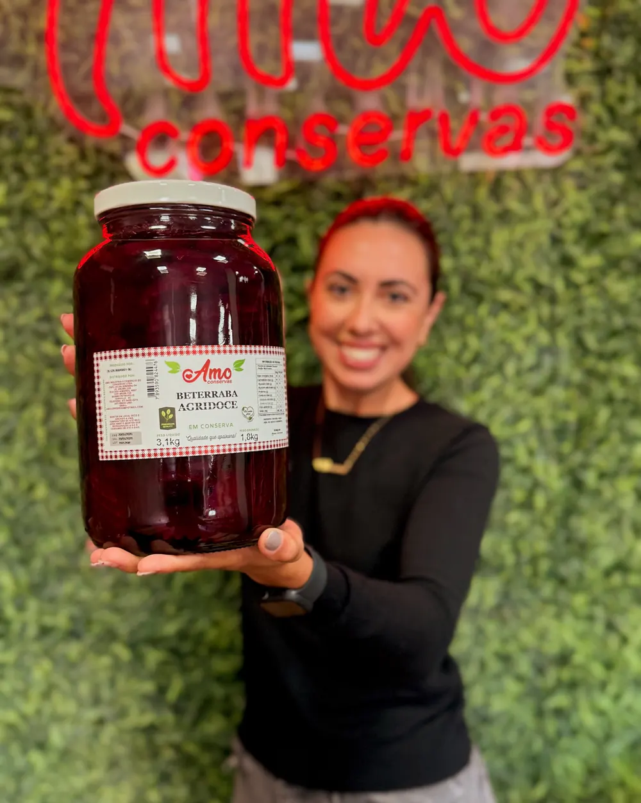
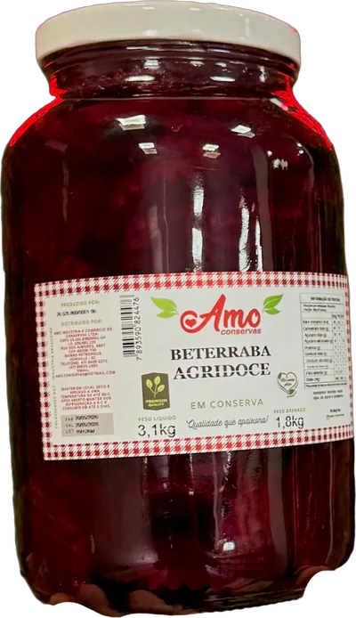
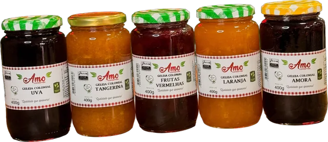
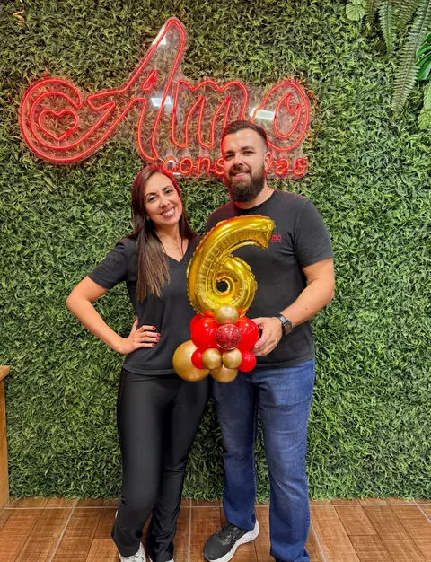

Conservas e geleias Amo, da loja do Petrópolis.
Beterraba agridoce, mini milho, cebola defumada e cinco sabores de geleia colonial. A tabela de preços vai pelo WhatsApp, pra sua casa, seu mercado ou seu restaurante.
- 4,9 no Google, 186 avaliações
- Rua dos Aimorés, 4897


Com o rótulo Amo
- Beterraba agridocePotes de 550 g e de 3,1 kg
- Geleia colonialUva, tangerina, frutas vermelhas, laranja e amora
- Mini milhoPote de 530 g
- Cebola em filetes sabor defumadoProduto artesanal, pote de 530 g

Pra casa e pra quem revende
Pra sua casa
Escolha os potes, peça a tabela e combine o pedido com a loja pelo WhatsApp. Ou passe na Rua dos Aimorés, 4897, no Petrópolis.
Pedir a tabela no WhatsAppPro seu mercado ou restaurante
“Somos a melhor marca de conservas disponível para seu consumo, seu mercado e seu restaurante!”
Amo Conservas, na página do Facebook
A beterraba agridoce também vem no pote de 3,1 kg, com 1,8 kg drenado.
Falar sobre revendaSeis anos de loja
Parede verde, neon vermelho e prateleiras de madeira cheias de potes. A loja da Amo fica na Rua dos Aimorés, 4897, no Petrópolis, e em 2026 fez seis anos.
- Seg a sex
- 9h às 12h e 14h às 18h
- Sábado
- 9h às 12h

Como pedir
Chame no WhatsApp
O número da loja é (47) 99633-1583.
Receba a tabela
Os preços vão pela tabela, direto na conversa.
Combine o pedido
Diga o que quer e acerte o resto com a loja.